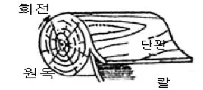

특별한국어능력시험문제(종이 목재)
Q. 1. 산업재해에서 생산설비 등으로부터 2차적으로 발생될 수 있는 재해로 맞지 않은 것은?
① 충돌
② 소음
③ 유해가스
④ 먼지
Right Ans:- ① 충돌
Q. 2. 작업장은 인위적인 환경이므로 생산 시설 장치 등으로부터 유해가스, 증기, 분진 등이 새어나와서 인체에 영향을 줄 수 있다. 다음 중 유해물질이 허용치 이하가 되게 하는 방법이 아닌 것은?
① 환기 위주의 국소배기방식
② 농도치의 기준치 상향방식
③ 공기를 불어넣는 송기방식
④ 먼지를 잡기위한 집진방식
Right Ans:- ② 농도치의 기준치 상향방식
Q. 3. 작업장 통행과 운반에 관한 안전사항이다. 다음 중 알맞지 않은 것은?
① 통로는 질서 정연하게 설치한다.
② 통로 안에서는 물건을 놓거나 작업을 하지 않는다.
③ 통로의 교차는 좌우의 전망이 나쁜 곳에 설치한다.
④ 물건을 운반할 때에는 앞이 보이지 않도록 높이 쌓지 않는다.
Right Ans:- ③ 통로의 교차는 좌우의 전망이 나쁜 곳에 설치한다.
Q. 4. 다음은 취급운반 재해의 원인이다. 맞지 않은 것은?
① 작업장 바닥이나 디딤 바닥이 불량하다.
② 정리 정돈이 불충분하다.
③ 적절하지 않은 도구나 기구를 사용한다.
④ 취급하는 물질의 위험성, 유행성에 대한 지식이 충분했다.
Right Ans:- ④ 취급하는 물질의 위험성, 유행성에 대한 지식이 충분했다.
Q. 5. 근로자가 업무 수행 중 그 업무로 말미암아 부상, 또는 질병에 걸리거나 사망하는 것을 무엇이라 하는가?
① 산업재해
② 산업사고
③ 산업사망
④ 산업상해
Right Ans:- ① 산업재해
Q. 6. 다음은 안전관리의 필요성을 나열한 것이다. 맞지 않는 것은?
① 근로자에게는 작업에 대한 불안을 제거해 주는 것이다.
② 안전관리는 생산의 감소를 가져오는 것만을 보호하는 것으로 한정되어있다.
③ 기업가에게는 생산 능률의 저해 내지는 재산의 피해를 제거해 주는 것이다.
④ 안전관리의 중요성은 선진국은 물론 각 국의 산업분야에도 더욱 강조되고 있다.
Right Ans:- ② 안전관리는 생산의 감소를 가져오는 것만을 보호하는 것으로 한정되어있다.
Q. 7. 다음 산업재해의 원인 중 직접적인 원인에 해당하지 않는 것은?
① 불완전한 동력 설비 및 시공기계설비
② 불완전한 채광 및 조명설비
③ 공사 급 진행에 의한 작업강행
④ 작업장의 정비 불 충분
Right Ans:- ③ 공사 급 진행에 의한 작업강행
Q. 8. 다음 중 목재의 결이 아닌 것은?
① 엇결면
② 곧은결면
③ 마구리면
④ 무늬결면
Right Ans:- ① 엇결면
Q. 9. 다음 중 목재의 흠 중에서 갈라짐의 종류가 아닌 것은?
① 목구할
② 옹이
③ 윤상할
④ 수심할
Right Ans:- ② 옹이
Q. 10. 목재의 흠 중에서 옹이의 종류가 아닌 것은?
① 산옹이
② 죽은옹이
③ 썩정이
④ 숨은 옹이
Right Ans:- ③ 썩정이
Q. 11. 목재의 광택은 광선이 반사할 때 얻어지는 시각적 감각을 의미하는데 광택도가 가장 큰 반사는 어느 것인가?
① 절대반사
② 선택반사
③ 난반사
④ 정반사
Right Ans:- ④ 정반사
Q. 12. 다음 보기에서 침엽수의 구조가 아닌 것은?
① 목섬유
② 가도관(헛물관)
③ 목부 유세포
④ 수지구
Right Ans:- ① 목섬유
Q. 13. 다음 중 목재의 주 성분중 화학적 주성분이 아닌 것은?
① 셀룰로오스(cellulose)
② 송진(pine resin)
③ 헤미셀룰로오스(hemicellulose)
④ 리그닌(lignin)
Right Ans:- ② 송진(pine resin)
Q. 14. 수목을 벌채하여 생재를 대기 중에 두었을 때 중량의 감소 후 수축이 일어나게 되는데 수축이 일어나게 되는 함수율 상태를 일컫는 말은?
① 섬유 한계점
② 섬유 팽창점
③ 섬유 포화점
④ 섬유 수축점
Right Ans:- ③ 섬유 포화점
Q. 15. 다음 중 수축 팽창률의 방향성에 대한 비율이 맞는 것은?
① 원둘레방향(무늬결방향) 20 : 반지름방향(곧은결방향) 1 : 섬유방향 10
② 원둘레방향(무늬결방향) 1 : 반지름방향(곧은결방향) 10 : 섬유방향 20
③ 원둘레방향(무늬결방향) 10 : 반지름방향(곧은결방향) 20 : 섬유방향 1
④ 원둘레방향(무늬결방향) 20 : 반지름방향(곧은결방향) 10 : 섬유방향 1
Right Ans:- ④ 원둘레방향(무늬결방향) 20 : 반지름방향(곧은결방향) 10 : 섬유방향 1
Q. 16. 목재를 잡아끄는 힘이 작용하면 그 물체내의 응집력에 의하며 저항하게 되는 강도는?
① 인장강도
② 전단강도
③ 압축강도
④ 휨강도
Right Ans:- ① 인장강도
Q. 17. 다음은 목재의 옹이와 강도에 대한 설명이다. 맞지 않은 것은?
① 압축강도는 옹이가 많을수록 감소한다.
② 죽은옹이보다 산옹이의 감소율이 크다.
③ 인장강도는 옹이가 많을수록 감소한다.
④ 옹이의 면적이 클수록 감소한다.
Right Ans:- ② 죽은옹이보다 산옹이의 감소율이 크다.
Q. 18. 다음 보기 중 목재의 재적단위 재(才)를 구하는 공식으로 맞는 것은?
① 1인치×1인치×12피트, 12인치×12인치×1인치
② 1자×1자×10자(10입방자) 단위는 모두 자로 환산
③ 단면적(1치×1치)×12자 = 단면은 치, 길이는 자
④ 단면적(가로×세로) 단위는 모두 M로 환산
Right Ans:- ③ 단면적(1치×1치)×12자 = 단면은 치, 길이는 자
Q. 19. 단변이 3치, 장변이 2자, 길이가 6자인 경우 목재의 재적은 얼마인가?
① 42(재, 才)
② 40(재, 才)
③ 36(재, 才)
④ 30(재, 才)
Right Ans:- ④ 30(재, 才)
Q. 20. 다음중 목재의 제재방법 또는 제재법이 아닌 것은?
① 평할제재
② 단판제재
③ 캔트제재
④ 돌림제재
Right Ans:- ② 단판제재
Q. 21. 다음은 띠톱제재기의 설명이다. 잘못된 것은?
① 지름이 같은 상부 거차와 하부 거차가 있다.
② 거차의 위치에 따라 수직으로 배치된 종형(또는 입형)이 있다.
③ 거차의 지름은 띠톱 기계의 두께(깊이)를 나타낸다.
④ 거차의 위치에 따라 수평으로 배치된 횡형(또는 수평형)이 있다.
Right Ans:- ③ 거차의 지름은 띠톱 기계의 두께(깊이)를 나타낸다.
Q. 22. 제재기계는 목재를 켜는데 사용하는 기계의 종류를 모두 말하는 것이다. 제재기계에 해당하지 않는 것은?
① 띠톱기계
② 둥근톱기계
③ 갱톱기계
④ 실톱기계
Right Ans:- ④ 실톱기계
Q. 23. 다음은 제재나 제재품에 대한 설명이다. 맞지 않는 것은?
① 원목이나 조각재 등을 의미한다.
② 원목에서 판재나 각재 등의 제재품을 생산하는 것을 말한다.
③ 원칙적으로 럼버는 두께가 5인치 이하의 제재목을 의미한다.
④ 원칙적으로 팀버는 두께가 5인치 이상의 제재목을 의미한다.
Right Ans:- ① 원목이나 조각재 등을 의미한다.
Q. 24. 다음은 제재에 대한 용어 설명이다. 맞지 않은 것은?
① 제재능률 : 제재시간당 제재량, 면적 또는 재적으로 나타낸다.
② 제재등급 : 제재목의 크기, 수종 등을 등급으로 구분한다.
③ 제재수율 : 제재 생산에 있어서 투입재료에 대한 제재목의 수율
④ 제재용 원목 : 제재목 생산에 적당한 크기와 질은 갖는 원목
Right Ans:- ② 제재등급 : 제재목의 크기, 수종 등을 등급으로 구분한다.
Q. 25. 곧은결 제재목을 생산하는 방법으로 맞는 것은?
① 널결제재목을 말한다.
② 수심을 벗어나서 제재한 제품을 말한다.
③ 연륜에 직각방향 방사단면 제재법으로 생산하는 것이다.
④ 변재에 가까운 널결제재목을 말한다.
Right Ans:- ③ 연륜에 직각방향 방사단면 제재법으로 생산하는 것이다.
Q. 26. 다음 중 널결 제재법, 제재목의 설명으로 알맞지 않은 것은?
① 재면이 접선단면을 가진 제재목
② 원목을 연륜의 접선단면으로 제재하는 방법
③ 널결 제재법에 의해 생산된 제재목
④ 재면이 방사단면을 가진 제재목
Right Ans:- ④ 재면이 방사단면을 가진 제재목
Q. 27. 다음 중 목재 건조의 목적이 아닌 것은?
① 강도 감소
② 접착성 증대
③ 중량감소
④ 수축 변형방지
Right Ans:- ① 강도 감소
Q. 28. 다음 중 건조에 의한 손상이 아닌 것은?
① 내부균열(갈라짐)
② 세포이상으로 옹이생성
③ 마구리면 균열
④ 골형의 요철현상
Right Ans:- ② 세포이상으로 옹이생성
Q. 29. 목재의 건조속도를 지배하는 원인 중 맞지 않은 것은?
① 일반적으로 비중이 크고 두께가 두꺼우면 건조시간이 오래 걸린다.
② 기온이 높을수록 건조속도는 증가한다.
③ 공기 중 관계습도가 높을수록 건조속도가 증가한다.
④ 일반적으로 풍속이 빠를수록 건조속도가 증가한다.
Right Ans:- ③ 공기 중 관계습도가 높을수록 건조속도가 증가한다.
Q. 30. 다음 중 목재의 건조전 처리 방법이 아닌 것은?
① 수침법
② 자비법
③ 증기법
④ 살균법
Right Ans:- ④ 살균법
Q. 31. 다음은 자연건조의 장점이다. 맞지 않은 것은?
① 건조소요 시간이 많이 걸린다.
② 일시에 많은 목재를 건조할 수 있다.
③ 열에너지가 절약된다.
④ 시설과 작업비용이 적게 든다.
Right Ans:- ① 건조소요 시간이 많이 걸린다.
Q. 32. 다음은 자연건조의 단점이다. 맞지 않은 것은?
① 기건 함수율 이하로 건조할 수 없다.
② 특수한 건조기술이 덜 요구된다.
③ 자연조건의 영향을 많이 받는다.
④ 넓은 장소가 필요하다
Right Ans:- ② 특수한 건조기술이 덜 요구된다.
Q. 33. 목재의 자연건조장의 입지조건으로서 맞지 않은 것은?
① 통풍이 잘되고 햇볕이 잘 드는 장소
② 배수가 잘 되는 장소
③ 완만한 경사지 또는 급경사지
④ 화재의 위험이 없는 장소
Right Ans:- ③ 완만한 경사지 또는 급경사지
Q. 34. 다음 중 목재의 인공건조 장치로 맞지 않은 것은?
① 가열장치
② 조습장치
③ 순환장치
④ 증기장치
Right Ans:- ④ 증기장치
Q. 35. 다음은 목재 인공건조법의 종류이다. 맞지 않은 것은?
① 온돌건조
② 증기건조
③ 고주파건조
④ 전열건조
Right Ans:- ① 온돌건조
Q. 36. 다음 중 목재 부패의 조건이 아닌 것은?
① 온도
② 약품
③ 습도
④ 공기
Right Ans:- ② 약품
Q. 37. 부패균에 의한 목재의 화학적 변화가 아닌 것은?
① 붉은색부패
② 백색부패
③ 갈라짐
④ 청색부패
Right Ans:- ③ 갈라짐
Q. 38. 목재 보존을 위한 방부제 선택을 위한 주의사항이다. 맞지 않은 것은?
① 목재 속으로 잘 침투되고 그 효과가 영구적일 것.
② 접속되는 금속류를 부식 시키지 않을 것.
③ 목재의 강도, 색깔을 손상시키지 않을 것.
④ 사람이나 짐승에 해가 없고 가격이 비싸고 구하기 어려울 것.
Right Ans:- ④ 사람이나 짐승에 해가 없고 가격이 비싸고 구하기 어려울 것.
Q. 39. 다음 목재의 방부제 종류가 아닌 것은?
① 유기용 방부제
② 크레오소트유(Creosote oil)
③ 펜타클로로페놀(Penta chloro phenol)
④ 황산구리
Right Ans:- ① 유기용 방부제
Q. 40. 다음 중에서 목재의 방부제 처리 방법이 아닌 것은?
① 도포법
② 밀폐법
③ 침지법
④ 압입법
Right Ans:- ② 밀폐법
Q. 41 . 목재의 방부제 처리 방법 중 목재를 밀폐된 가마 안에 넣고 방부제를 주입하는 방법은?
① 도포법
② 침지법
③ 압입법
④ 밀폐법
Right Ans:- ③ 압입법
Q. 42 . 목재에 침투하여 화기에 안전하고 마무리 도장이 가능하나 응축하기 쉬운 결점이 있는 방부제는가?
① 유기용 방부제
② 크레오소트유(Creosote oil)
③ 펜타클로로페놀(Penta chloro phenol)
④ 수용성 방부제
Right Ans:- ④ 수용성 방부제
Q. 43 . 접착제에 따른 합판의 종류이다. 그 연결이 맞지 않은 것은?
① 3류합판(비내수성합판) - 멜라민수지(Melamine resin)
② 1류합판(완전내수성합판) - 레조르시놀수지(Resorcinol resin)
③ 2류합판(보통내수성합판) - 요소수지접착제
④ 3류합판(비내수성합판) - 카제인수지(Casein resin)
Right Ans:- ① 3류합판(비내수성합판) - 멜라민수지(Melamine resin)
Q. 44 . 합판 제조 시 단판을 생산하는 방법이 아닌 것은?
① 로우터리 베니어(Rotary Veneer)
② 라운드 베니어(Round Veneer)
③ 슬라이스드 베니어(Sliced Veneer)
④ 소오드베니어(Sawed Veneer)
Right Ans:- ② 라운드 베니어(Round Veneer)
Q. 45 . 합판 제조에 대한 설명이다. 맞지 않은 것은?
① 단판을 1장마다 섬유방향과 직교되게 붙인다.
② 최소 3매의 단판으로 홀수 겹으로 접착한다.
③ 단판을 1장마다 섬유방향과 직교되게 짝수 겹으로 붙인다.
④ 1장의 얇은 판을 단판이라 한다.
Right Ans:- ③ 단판을 1장마다 섬유방향과 직교되게 짝수 겹으로 붙인다.
Q. 46 . 합판의 심재료에 의한 분류가 알맞지 않은 것은?
① 럼버코어(Lumber core) 합판
② 허니코어(Honey core) 합판
③ 보드류코어(Board core) 합판
④ 화장합판
Right Ans:- ④ 화장합판
Q. 47 . 목재의 작은 조각에 결합제를 더하여 성형열압한 판 모양의 제품을 무엇이라 하는가?
① 파아티클 보오드(Particle board)
② 럼버 코어(Lumber core)
③ 허니 코어(Honey core)
④ 보드류 코어(Board core)
Right Ans:- ① 파아티클 보오드(Particle board)
Q. 48 . 각종 식물성 섬유를 펄프화 하여 접착제, 중량제를 첨가하여 열압성형한 판 형태의 재료를 무엇이라 하는가?
① 파아티클 보오드(Particle board)
② 섬유판(Fiber board)
③ 집성재(Glue-Laminated Timber)
④ 럼버코어(Lumber core)
Right Ans:- ② 섬유판(Fiber board)
Q. 49 . 집성목을 적층하는 이음의 종류가 아닌 것은?
① 결 이음
② 맞댄이음
③ 메뚜기장이음
④ 엇걸이이음
Right Ans:- ③ 메뚜기장이음
Q. 50 . 다음 중 집성목의 장점 중 맞지 않은 것은?
① 균등한 대단면을 가진 장척재를 만들 수 있다.
② 응력에 따라 필요한 단면으로 성형할 수 있다.
③ 건조된 목재를 사용함으로 집성 시 건조가 빠르고 보전처리에 의한 내구성을 증진할 수 있다.
④ 나뭇결을 맞추어 접착을 해야 한다.
Right Ans:- ④ 나뭇결을 맞추어 접착을 해야 한다.
Q. 51 . 화선부가 볼록하게 나와 있어 잉크가 이곳에만 묻게 되고, 여기에 종이를 놓고 압력을 가하여 인쇄하는 방식은?
① 볼록판인쇄
② 평판인쇄
③ 오목판인쇄
④ 스크린인쇄
Right Ans:- ① 볼록판인쇄
Q. 52 . 화선부와 비화선부가 같은 평면 위에 있고, 물과 기름의 반발 작용을 이용하여 인쇄하는 방식은?
① 볼록판인쇄
② 평판인쇄
③ 오목판인쇄
④ 스크린인쇄
Right Ans:- ② 평판인쇄
Q. 53 . 판면의 화선부가 오목하게 패여 있어, 그 곳에 채워진 잉크가 피인쇄체로 옮겨져 인쇄가 되는 방식은?
① 볼록판인쇄
② 평판인쇄
③ 오목판인쇄
④ 스크린인쇄
Right Ans:- ③ 오목판인쇄
Q. 54 . 잉크가 화선부를 통과하여 피인쇄체에 묻게 하고, 비화선부는 통과하지 않도록 하여 인쇄하는 방식은?
① 볼록판인쇄
② 평판인쇄
③ 오목판인쇄
④ 스크린인쇄
Right Ans:- ④ 스크린인쇄
Q. 55 . 판반 위에 인쇄판을 올려놓고 고정시킨 다음, 피인쇄체를 판 위에 놓은 후, 압반으로 압력을 가하여 인쇄하는 인쇄기는?
① 평압식인쇄기
② 원압식인쇄기
③ 윤전식인쇄기
④ 디지털인쇄기
Right Ans:- ① 평압식인쇄기
Q. 56 . 판반에 판을 걸고 실린더로 되어 있는 압통 밑을 통과시켜 피인쇄체에 인쇄하는 인쇄기는?
① 평압식인쇄기
② 원압식인쇄기
③ 윤전식인쇄기
④ 디지털인쇄기
Right Ans:- ② 원압식인쇄기
Q. 57 . 판통과 압통이 전부 실린더로 되어 있으며, 판통에 인쇄판을 붙이고, 판통과 압통 사이로 낱장 종이나 두루마리 종이를 통과시켜 인쇄하는 인쇄기는?
① 평압식인쇄기
② 원압식인쇄기
③ 윤전식인쇄기
④ 디지털인쇄기
Right Ans:- ③ 윤전식인쇄기
Q. 58 . 속장과 표지를 따로 가공하여 제책하는 방식으로, 실로 멘 속장을 다듬고 재단한 다음, 표지를 싸서 만드는 제책 방식은?
① 양장제책
② 반양장제책
③ 호부장제책
④ 중철제책
Right Ans:- ① 양장제책
Q. 59 . 속장을 먼저 철사로 꿰매고, 등에 풀칠을 하여 눌러 말린 다음, 표지를 씌우고 표지와 속장을 함께 다듬어 재단하는 제책방식은?
① 양장제책
② 반양장제책
③ 호부장제책
④ 무선철제책
Right Ans:- ③ 호부장제책
Q. 60 . 책의 속장을 실이나 철사로 매지 않고 등부분을 강력한 접착제로 강압 접착하여 굳히고, 표지를 싼 다음, 속장과 표지를 함께 다듬어 제책하는 방식은?
① 양장제책
② 반양장제책
③ 중철제책
④ 무선철제책
Right Ans:- ④ 무선철제책
Q. 61 . 책이나 잡지의 양장제책 공정에서 한책분의 페이지가 이어지도록 한 묶음씩 합치는 공정을 무엇이라 하는가?
① 나눔 절단
② 접기
③ 쪽 맞추기
④ 고르기
Right Ans:- ③ 쪽 맞추기
Q. 62 . 다음 중에서 인쇄물의 표면 가공을 하는 목적이 아닌 것은?
① 인쇄지면의 광택내기
② 잉크퇴색의 방지
③ 인쇄면이나 지면의 강도를 작게 한다.
④ 약품에 견디는 힘을 크게 한다.
Right Ans:- ③ 인쇄면이나 지면의 강도를 작게 한다.
Q. 63 . 종이컵, 쥬스컵, 식료품의 포장 가공에 많이 이용되는 표면가공 방법은?
① 광택니스칠
② 왁스칠
③ 비닐필름입히기
④ 셀룰로이드입히기
Right Ans:- ② 왁스칠
Q. 64 . 접는 상자를 만들 때, 종이를 접은 후 바탕에 풀을 칠해서 필요한 모양으로 만드는 기계를 무엇이라 하는가?
① 제함기
② 초지기
③ 제판기
④ 확대기
Right Ans:- ① 제함기
Q. 65 . 인쇄물을 한층 아름답게 하는 방법으로 표지 또는 표지의 등에 금글자나 은글자를 넣는 것을 무엇이라 하는가?
① 원형내기
② 풀칠하기
③ 비닐필름입히기
④ 눌러박기
Right Ans:- ④ 눌러박기
Q. 66 . 다음 중에서 빛의 3원색이 아닌 것은?
① B(blue)
② G(green)
③ R(red)
④ Bk(black)
Right Ans:- ④ Bk(black)
Q. 67 . 인쇄잉크인 Y(yellow), M(magenta), C(cyan) 3색을 동일한 양으로 혼합하면 어떤 색이 되는가?
① 청색
② 주황색
③ 흰색
④ 검정색
Right Ans:- ④ 검정색
Q. 68 . 명도나 채도에 관계없이 어떤 색이 빨강, 주황 또는 파랑색에 가까운지 등으로 구별되는 성질을 무엇이라 하는가?
① 색상
② 농도
③ 감광도
④ 색입체
Right Ans:- ① 색상
Q. 69 . 색의 선명도 즉 색채의 강하고 약한 정도를 말하는 것은?
① 명도
② 채도
③ 색상
④ 색입체
Right Ans:- ② 채도
Q. 70 . 표면색의 3속성인 색상, 명도, 채도를 감각적으로 등간격의 척도로 배열한 표색계를 무엇이라 하는가?
① 먼셀표색계
② CIE표색계
③ 흑백표색계
④ 컬러표색계
Right Ans:- ① 먼셀표색계
Q. 71 . 다음 중에서 인쇄잉크의 주요 성분이 아닌 것은?
① 색료
② 비이클
③ 보조제
④ 세정액
Right Ans:- ④ 세정액
Q. 72 . 다음 중에서 인쇄 잉크의 주요 성분인 비이클에 속하지 않는 것은?
① 기름
② 수지
③ 용제
④ 왁스
Right Ans:- ④ 왁스
Q. 73 .
인쇄잉크의 주요 성분인 보조제 중에서, 젤리나 버터 상태와 같은 형태로 점착성을 저하시키는 역할을 하는 것은?
① 콤파운드
② 리듀서
③ 정착제
④ 현상제
Right Ans:- ① 콤파운드
Q. 74 . 오프셋인쇄기에서 필수적인 3통이 아닌 것은?
① 판통
② 고무통
③ 압통
④ 습수통
Right Ans:- ④ 습수통
Q. 75 . 오프셋인쇄기에서 잉크가 전이되는 순서가 맞는 것은?
① 판 → 블랭킷 → 종이
② 판 → 종이 → 블랭킷
③ 블랭킷 → 판 → 종이
④ 블랭킷 → 종이 → 판
Right Ans:- ① 판 → 블랭킷 → 종이
Q. 76 . 다음 중 스크린인쇄에서 기본 요소가 아닌 것은?
① 인쇄판
② 스퀴지
③ 잉크
④ 조각기
Right Ans:- ④ 조각기
Q. 77 . 현재 가장 일반적으로 사용되고 있는 스크린인쇄의 제판법인 직접법의 일부 공정 중 순서가 맞는 것은?
① 감광액도포 → 감광액건조 → 빛쬠
② 감광액도포 → 빛쬠 → 감광액건조
③ 감광액건조 → 감광액도포 → 빛쬠
④ 감광액건조 → 빛쬠 → 감광액도포
Right Ans:- ① 감광액도포 → 감광액건조 → 빛쬠
Q. 78 . 다음 중에서 평면스크린인쇄기가 아닌 것은?
① 수동진공스크린인쇄기
② 반자동스크린인쇄기
③ 전자동스크린인쇄기
④ 곡면스크린인쇄기
Right Ans:- ④ 곡면스크린인쇄기
Q. 79 . 광택이 있는 용지로서 볼록판의 사진판이나 평판인쇄에 사용하는 종이이며, 원지는 화학펄프를 주로 사용하는 인쇄용지는?
① 아트지
② 갱지
③ 골판지
④ 글라신지
Right Ans:- ① 아트지
Q. 80 . 주로 지폐, 유가증권과 같은 정밀도가 높은 고품질의 인쇄 제품에 이용되는 제판재료는?
① 조각오목판
② PS판
③ 스크린판
④ 볼록판
Right Ans:- ① 조각오목판
Q. 81 . 다음 재해원인 요소 중 자연재해라고 볼 수 없는 것은?
① 강풍에 의한 피해
② 폭우에 의한 홍수
③ 지진에 의한 피해
④ 산업재해에 의한 피해
Right Ans:- ④ 산업재해에 의한 피해
Q. 82 . ‘안전제일’이라는 표어를 처음 제창한 사람은?
① 미국, 게리
② 영국, 처칠
③ 한국, 박정희
④ 프랑스, 드골
Right Ans:- ① 미국, 게리
Q. 83 . 각 산업체에서는 산업재해를 방지하기 위하여 안전점검이 필요하다. 다음 중 안전점검의 종류가 아닌 것은?
① 일상 점검
② 정기 점검
③ 작업중 점검
④ 수시 점검
Right Ans:- ③ 작업중 점검
Q. 84 . 둥근톱기계를 사용할시 톱날높이를 가공되는 부재의 높이보다 얼마를 높게 조정 하여야 하는가?
① 3mm
② 10mm
③ 20mm
④ 30mm
Right Ans:- ① 3mm
Q. 85 . 손밀이 대패기계를 사용할 때 주의해야 할 사항 중 맞지 않는 것은?
① 소매가 긴 옷은 걷어 올린다.
② 앞 정반을 너무 많이 내려 무리하게 깎지 않는다.
③ 목재에 상처를 방지하기 위하여 반드시 목장갑을 착용하여 사용한다.
④ 300mm 이하의 짧은 부재는 사용하지 않는다.
Right Ans:- ③ 목재에 상처를 방지하기 위하여 반드시 목장갑을 착용하여 사용한다.
Q. 86 . 장부기 사용 시 주의해야 할 사항 중 맞지 않는 것은?
① 가공물을 정반면과 기준자 사이에 밀착되도록 수평바이스와 수직바이스로 단단히 고정한다.
② 송재할 때는 빨리 밀고 당길 때는 절삭면이 그대로 나오므로 천천히 당긴다.
③ 장부를 만들고 잘릴 부분이 크면 잘라내고 해야 한다.
④ 장부 크기를 맞출 때는 전원을 끄고 완전히 멈춘 후에 조정한다.
Right Ans:- ② 송재할 때는 빨리 밀고 당길 때는 절삭면이 그대로 나오므로 천천히 당긴다.
Q. 87 . 가구를 제조하려면 수공구를 사용하게 되는데 수공구재해를 방지하기 위하여 가장 거리가 먼 것은?
① 공구의 성능을 충분히 익혀야 한다.
② 날이 있는 공구는 날이 너무 예리하면 날에 베일 수 있다.
③ 공구에 맞는 사용법을 충분히 익혀야 한다.
④ 공구가 작업에 적합한지의 여부를 확인하여야한다
Right Ans:- ② 날이 있는 공구는 날이 너무 예리하면 날에 베일 수 있다.
Q. 88 . 수공구 사용상 유의 사항이 아닌 것은 ?
① 결함이 있는 공구는 절대 사용하여서는 아니 된다.
② 본래의 용도 이외에는 절대로 사용하여서는 아니 된다.
③ 사용 후에는 반드시 지정된 장소에 갖다 두어야 한다.
④ 사용 중인 공구라 하더라도 흩어지지 않도록 정리 상자에 넣어 시건하여야 한다.
Right Ans:- ④ 사용 중인 공구라 하더라도 흩어지지 않도록 정리 상자에 넣어 시건하여야 한다.
Q. 89 . 다음은 톱 사용에 관한 설명이다. 잘못된 설명은?
① 톱니의 용도에 맞는 작업을 한다.
② 멀리 있는 가공재료는 톱날로 끌어 당겨 작업한다.
③ 사용 후에는 톱니가 다른 쇠붙이 공구에 닿지 않도록 보관한다.
④ 가공물은 단단히 고정한 후 톱질 한다.
Right Ans:- ② 멀리 있는 가공재료는 톱날로 끌어 당겨 작업한다.
Q. 90 . 가구설계제도에서 디자인 요소가 아닌 것은?
① 형태와 구조
② 희귀성과 신속성
③ 재료와 가공
④ 기능과 미
Right Ans:- ② 희귀성과 신속성
Q. 91 . 우리나라의 건축제도 통칙에 속하는 것은 다음 중 어느 것인가?
① KS A 0005
② KS B 0001
③ KS F 1501
④ KS G 1011
Right Ans:- ③ KS F 1501
Q. 92 . 가구의 표시법 종류가 아닌 것은?
① 스케치(sketch)
② 랜더링(rendering)
③ 모형의 제작
④ 가구의 재료
Right Ans:- ④ 가구의 재료
Q. 93 . 제도에서 선의 종류와 용도가 알맞게 짝지어진 것은?
① 일점쇄선 - 물체의 중심이나 대칭축을 나타내는 선
② 이점쇄선 - 물체의 절단한 부분을 나타내는 선
③ 실선 - 물체가 보이지 않는 부분의 외형을 나타내는 선
④ 파선 - 물체가 보이는 부분의 외형을 나타내는 선
Right Ans:- ① 일점쇄선 - 물체의 중심이나 대칭축을 나타내는 선
Q. 94 . 제도에서 치수선에 치수기입법으로 맞지 않는 것은?
① 중복을 피한다.
② 계산하지 않아도 알 수 있게 한다.
③ 치수선에 직각되게 한다.
④ 도면의 아래로부터 위로, 왼쪽에서 오른쪽으로 읽게 한다.
Right Ans:- ③ 치수선에 직각되게 한다.
Q. 95 . 가구도면의 구체적 계획의 표시로 사용되는 도면의 종류가 아닌 것은?
① 투시도
② 공작도
③ 조립도
④ 부품도
Right Ans:- ① 투시도
Q. 96 . 도면에는 치수 이외에도 어떤 글자나 기호로써 제품의 모양이나 크기를 나타낸다. 다음에서 두께를 나타내는 기호는?
① R
② t
③ L
④ W
Right Ans:- ② t
Q. 97 . 투상도의 종류가 아닌 것은?
① 정 투상도
② 등각 투상도
③ 사면 투상도
④ 경사 투상도
Right Ans:- ③ 사면 투상도
Q. 98 . 투시도는 실제로 우리 눈에 비치는 모양과 같게 물체를 그리는 방법이다. 다음에서 투시도의 종류가 아닌 것은?
① 평행 투시도
② 유각 투시도
③ 사각 투시도
④ 정면 투시도
Right Ans:- ④ 정면 투시도
Q. 99 . 가구설계에 있어 가장 중요하게 고민하고 검정하여야 하는 것이 사람의 인체치수와 맞추어야 된다. 우리나라 보편적인 인체치수로 의자의 높이는 얼마가 적당한가?
① 20~25cm
② 30~35cm
③ 40~45cm
④ 50~55cm
Right Ans:- ③ 40~45cm
Q. 100 . 우리나라 중 . 고등학교의 학생용 책상규격(폭 × 길이 × 높이)으로 적당한 것은? (1인용 기준)
① 900 × 1,500 × 850mm
② 670 × 1,000 × 730mm
③ 550 × 800 × 600mm
④ 420 × 600 × 450mm
Right Ans:- ② 670 × 1,000 × 730mm
Q. 101. 둥근톱 기계의 주요구조부에 속하지 않는 것은?
① 진동 누름 장치
② 테이블 승강 장치
③ 톱축
④ 안내자
Right Ans:- ① 진동 누름 장치
Q. 102. 목공기계에 관한 설명 중 틀린 것은?
① 둥근톱 기계로 경사 켜기 및 연귀 자르기 작업을 할 수 있다.
② 수압(손밀이) 대팻날 축의 회전수는 20,000~25,000 rpm이다.
③ 긴 홈파기는 루우터 기계로 할 수 있다.
④ 반턱 바탕을 만들 때 수압대패 기계를 사용할 수 있다.
Right Ans:- ② 수압(손밀이) 대팻날 축의 회전수는 20,000~25,000 rpm이다.
Q. 103. 자동대패기계에 관한 기술 중 맞지 않는 것은?
① 자동으로 부재를 이동하여 목재를 깎는 기계이다.
② 자동대패는 날 길이에 의하여 규격이 결정된다.
③ 자동대패기계의 날 수는 2~4개로 되어 있다.
④ 수압대패기계와 같이 부재의 1면의 밑면이 깎인다.
Right Ans:- ④ 수압대패기계와 같이 부재의 1면의 밑면이 깎인다.
Q. 104. 수압대패기계 테이블 조정 방법 설명 중 맞는 것은?
① 뒤 테이블과 날 끝과 앞 테이블은 일직선상에 있어야 한다.
② 날 끝은 깎이는 두께만큼 높게 하고 앞뒤 테이블은 일직선상에 있어야 한다.
③ 뒤 테이블은 날 끝과 일직선상에 있고, 앞 테이블은 깎이는 양만큼 낮게 조정한다.
④ 앞 테이블과 날 끝은 일직선상에 있고, 뒤 테이블은 깎이는 양만큼 낮게 조정한다.
Right Ans:- ③ 뒤 테이블은 날 끝과 일직선상에 있고, 앞 테이블은 깎이는 양만큼 낮게 조정한다.
Q. 105. 각 끌기계에서 장부 깊이를 조정하는 장치는?
① 좌우 이동 핸들
② 상하 이동 핸들
③ 전후 이동 핸들
④ 각 끌기계 날
Right Ans:- ② 상하 이동 핸들
Q. 106. 휴대용 루터기의 사용에 관한 기술 중 맞지 않는 것은?
① 깎기의 춤은 사용할 바이트의 길이와 모터를 위아래로 움직이는 깊이에 의해 결정된다.
② 일반적으로 통맞춤, 주먹장맞춤, 홈파기, 면따기 등 맞춤을 할 때 사용한다.
③ 루터기의 회전축 rpm은 20,000정도이다.
④ 루터기의 작동 이동속도가 느리면 나무가 타는 현상이 있을 수 있다.
Right Ans:- ② 일반적으로 통맞춤, 주먹장맞춤, 홈파기, 면따기 등 맞춤을 할 때 사용한다.
Q. 107. 건축현장에서 창문의 홈을 팔 때 사용하는 휴대용 전동공구는?
① 휴대용 전동 둥근톱
② 휴대용 전동 대패
③ 휴대용 전동 루터
④ 휴대용 전동 홈대패
Right Ans:- ④ 휴대용 전동 홈대패
Q. 108. 목재의 각재나 판재를 직선으로 자르거나 켤 때 사용하는 휴대용 전동공구는?
① 휴대용 전기 드릴
② 휴대용 전동 사포기
③ 휴대용 전동 둥근톱
④ 휴대용 공압식 타카
Right Ans:- ③ 휴대용 전동 둥근톱
Q. 109. 휴대용 전동 사포기에 대한 설명 중 맞는 것은?
① 휴대용 전동 사포기에는 정반과 축의 편심 좌우 원형으로 움직이는 것과 벨트 사포지를 회전하여 사포질하는 것이 있다.
② 휴대용 전동 벨트 사포기는 규격이 일정하여 단일 벨트 사포지를 사용한다.
③ 휴대용 전동 사포기는 평면으로 된 바닥만 사포질이 가능하다.
④ 휴대용 전동 사포기는 집진이 않되어 분진의 처리가 곤란하다.
Right Ans:- ① 휴대용 전동 사포기에는 정반과 축의 편심 좌우 원형으로 움직이는 것과 벨트 사포지를 회전하여 사포질하는 것이 있다.
Q. 110. 곱자의 사용 용도가 아닌 것은?
① 근사 곡선을 그을 때 사용 된다.
② 길이를 측정하거나 직선을 긋는다.
③ 장부구멍의 깊이를 측정한다.
④ 15mm 나비의 평행선을 긋는데 사용한다.
Right Ans:- ③ 장부구멍의 깊이를 측정한다.
Q. 111. 조합자로 부재를 측정하거나 작업을 점검할 수 없는 것은?
① 평면 및 직선 상태
② 수직 및 수평 상태
③ 직각이나 연귀 긋기
④ 임의의 각 측정이나 긋기
Right Ans:- ④ 임의의 각 측정이나 긋기
Q. 112. 망치의 크기는 무엇으로 나타내는가?
① 망치 머리의 무게
② 망치 머리의 둘레
③ 망치 자루의 길이
④ 망치 자루의 지름
Right Ans:- ① 망치 머리의 무게
Q. 113. 곡면을 깎을 때 사용하는 대패는?
① 평 대패
② 남경 대패
③ 옆 대패
④ 홈 대패
Right Ans:- ② 남경 대패
Q. 114. 톱을 보면 톱날의 날어김이 있는데 이는 톱몸 두께의 몇 배인가?
① 1.3~1.8배
② 2.0~2.5배
③ 2.5~3.0배
④ 3.0배 이상
Right Ans:- ① 1.3~1.8배
Q. 115. 대패집으로 많이 사용되는 나무는?
① 은행나무
② 소나무
③ 오동나무
④ 느티나무
Right Ans:-
Q. 116. 합판을 이용하여 토이박스(toy box)를 제작하고자 할 때, 다음 중 가장 먼저 해야 하는 것은?
① 포장
② 조립
③ 부속철물 부착
④ 재단
Right Ans:- ④ 재단
Q. 117. 다음 가구 제조 공정은 어느 것을 제작하기 위한 공정인가?
가재단→심재조립→합판접착→정재단→에지(edge)접착→세공
① 의자다리 제작
② 패널(panel)제작
③ 서랍제작
④ 식탁기둥 제작
Right Ans:- ② 패널(panel)제작
Q. 118. 가구 제조 공정에서 사용하는 CNC기계로 할 수 없는 작업은?
① 재단
② 조각
③ 절단
④ 도장
Right Ans:- ④ 도장
Q. 119. 각 부재 두께의 1/2을 따내어 맞추었을 때 상부부재와 하부재가 평평하게 된 맞춤 형태는?
① 홈맞춤
② 연귀맞춤
③ 반턱맞춤
④ 장부맞춤
Right Ans:- ③ 반턱맞춤
Q. 120. 넓은 판재를 제작하기 위한 쪽매로, 가장 일반적이며 가공이 쉬운 방법은?
① 오늬쪽매
② 틈막이쪽매
③ 딴혀쪽매
④ 맞댄쪽매
Right Ans:- ④ 맞댄쪽매
Q. 121. 계단의 난간두겁 이음 시 가장 일반적으로 사용되는 방법은?
① 턱솔이음
② 은장이음
③ 엇걸이 산지이음
④ 턱걸이 주먹장이음
Right Ans:- ② 은장이음
Q. 122. 다음 중 코너록킹 등의 기계를 이용하여 서랍의 옆널과 뒷널 등에 주로 사용 되는 맞춤은?
① 사개맞춤
② 주먹장 맞춤
③ 쪽매 맞춤
④ 장부 맞춤
Right Ans:- ① 사개맞춤
Q. 123. 나사못에 의한 접합 기법을 설명한 것으로 틀린 것은?
① 전동 드라이버 사용이 가능하다.
② 예비 구멍은 나사못 굵기보다 크거나 같아야 한다.
③ 나사못은 망치로 박아서는 안 된다.
④ 섬유질이 약한 목재에는 부적당하다.
Right Ans:- ② 예비 구멍은 나사못 굵기보다 크거나 같아야 한다.
Q. 124. 서랍 앞널과 옆널의 주먹장 맞춤시 경사각은 보통 몇 °(도) 인가?
① 5°
② 18°
③ 45°
④ 68°
Right Ans:- ② 18°
Q. 125. 다음 중 가구 마무리 도장 작업에 필요한 사포로 사용될 수 있는 것은?
① #80
② #100
③ #150
④ #320
Right Ans:- ④ #320
Q. 126. 다음 중 플러시 패널 합판 접착 후 에지를 붙이기 위한 정재단 장비는?
① 라운드 테노나(round tenoner)
② 갱립쇼(gang rip saw)
③ 더블 엔드 테노나(double end tenoner)
④ 크로스 커팅 쇼(cross cutter saw)
Right Ans:- ③ 더블 엔드 테노나(double end tenoner)
Q. 127. 가구 제조 공정 중 보통 가장 나중에 이루어지는 공정은?
① 도장
② 장부 가공
③ HPM 접착
④ 장식물 부착
Right Ans:- ④ 장식물 부착
Q. 128. 다음 중 목재의 장점을 기술한 것으로 적절하지 않는 것은?
① 비중에 비하여 강도가 크다
② 건조 수축 변형이 크다.
③ 열전도율이 낮다.
④ 산과 알칼리에 대한 저항이 크다.
Right Ans:- ② 건조 수축 변형이 크다.
Q. 129. 목재의 분류 중 다른 한 종류는?
① 느티나무
② 벗나무
③ 너도밤나무
④ 소나무
Right Ans:- ④ 소나무
Q. 130. 다음 중 합판을 설명한 것으로 틀린 것은?
① 판재에 비하여 균질이다.
② 방향에 따른 강도의 차가 크다.
③ 곡면판을 만들 수 있다.
④ 규격은 3×6자(915×1830mm), 4×8자(1220×2440mm)가 주로 사용된다.
Right Ans:- ② 방향에 따른 강도의 차가 크다.
Q. 131. 파아티클보드(Particle Board)의 특성이 아닌 것은?
① 강도와 섬유 방향에 따른 방향성이 크다.
② 방부, 방화제의 첨가에 따라 방부, 방화성을 높일 수 있다.
③ 흡음성과 열의 차단성도 좋다.
④ 강도가 크므로 구조용으로도 적합하며 선박, 마룻널, 칸막이, 가구 등에 쓰인다.
Right Ans:- ① 강도와 섬유 방향에 따른 방향성이 크다.
Q. 132. 목재를 일정한 크기의 각재로 켠 다음 섬유방향을 서로 평행 시켜 못 등을 이용 하지 않고 접착한 것으로 세로방향으로 강한 소재의 특성을 강조시킨 재료는?
① 집성목(Glue-Laminated Timber)
② 파아티클 보드(Particle Board)
③ MDF섬유판 (Medium Density Fiber Board)
④ OSB(Oriented Strand Board)
Right Ans:- ① 집성목(Glue-Laminated Timber)
Q. 133. 그림과 같이 제재를 하면 목재의 판재 결은?
① 무늬결
② 사결
③ 이다메결
④ 곧은결
Right Ans:- ④ 곧은결
Q. 134. 목재 가루를 압축한 바탕재(HDF) 위에 고압력으로 강화시킨 여러 층의 표면판을 적층하여 접착시킨 복합마루재는?
① 원목마루(strip flooring)
② 온돌마루(plywood flooring)
③ 강화마루(laminated flooring)
④ 래핑마루(wrapping flooring)
Right Ans:- ③ 강화마루(laminated flooring)
Q. 135. 그림과 같이 합판의 단판을 제조하기 위한 방법은?

① 반 rotary veneer
② sliced veneer
③ sawed veneer
④ rotary veneer
Right Ans:- ④ rotary veneer
Q. 136. 목재의 건조 목적으로 맞지 않은 것은?
① 수축이나 변형을 방지한다.
② 건조시키면 강도는 감소한다.
③ 방부제나 합성수지의 주입이 용이해진다.
④ 중량이 감소된다.
Right Ans:- ② 건조시키면 강도는 감소한다.
Q. 137. 철강을 만드는 기본공정은 제선 → □ → 연주 → 압연을 거친다. □속에 적당한 것은?
① 전로
② 평로
③ 제강
④ 도가니
Right Ans:- ③ 제강
Q. 138. 금속재의 기계적 성질 중 재료가 외력을 받아도 변형되지 않거나, 극히 미비한 변형을 수반하고 파괴되는 성질은?
① 취성
② 소성
③ 강성
④ 탄성
Right Ans:- ① 취성
Q. 139. 금속 제품으로 목재의 전단력을 보강하기 위한 것은?
① 볼트
② 나사못
③ 리벳
④ 듀벨
Right Ans:- ④ 듀벨
Q. 140. 다음중 주로 장식 가공품에 많이 사용되는 것은?
① 박강판
② 아연철판
③ 황동판
④ 구리판
Right Ans:- ③ 황동판
Q. 141 . 오늘날 각종 필름재, 바닥재, 몰딩재, 가구의 표면재, 아크릴판, 부엌가구 상판재로 많이 쓰이는 인조석재, FRP 제품, 각종 창호재까지 사용되고 있는 것은?
① 합성수지
② 유리
③ 알루미늄
④ 시멘트
Right Ans:- ① 합성수지
Q. 142 . 다음 합성수지 중 다른 한 종류는?
① 페놀수지, 요소수지
② 요소수지, 멜라민수지
③ 염화비닐수지, 아크릴수지
④ 페놀수지, 멜라민수지
Right Ans:- ③ 염화비닐수지, 아크릴수지
Q. 143 . 다음 중 가구 소파 마감재로 많이 사용되는 인조 피혁재(인조가죽 artificial leather)의 특징이 아닌 것은?
① 가죽 대용으로 사용되며 일반적으로 “레자”라고 불려진다.
② 천연 피혁에 비해 가격이 저렴하지만 다양한 색상과 패턴을 만들 수 없다.
③ 염화비닐(pvc)수지를 이용하기 때문에 화재에 약한 단점이 있다.
④ 주로 가구를 제작할 때 사용되며, 실내건축의 마감재료로도 적용된다.
Right Ans:- ② 천연 피혁에 비해 가격이 저렴하지만 다양한 색상과 패턴을 만들 수 없다.
Q. 144 . 다음그림의 경첩 명칭은?
① 숨은경첩
② 우아미경첩
③ 씽크경첩
④ 그라운드 경첩
Right Ans:- ③ 씽크경첩
Q. 145 . 접착성, 내열성, 내수성이 우수하여 주로 목재에 사용되는 접착제는?
① 페놀 수지 접착제
② 에폭시 수지 접착제
③ 멜라민 수지 접착제
④ 요소 수지 접착제
Right Ans:- ① 페놀 수지 접착제
Q. 146 . 도료를 도장하기에 알맞은 점성과 농도상태를 유지하기 위하여 사용되는 성분은?
① 안료(pigment)
② 전색제(vehicle)
③ 용제(solvent)
④ 보조제
Right Ans:- ③ 용제(solvent)
Q. 147 . 다음 중 천연도료라고 할 수 있는 것은?
① 카슈
② 옻칠
③ 합성수지 바니쉬
④ 에나멜
Right Ans:- ② 옻칠
Q. 148 . 식탁테이블 상판 크기가 600×1200mm, 두께30mm로 제작할 경우 목재의 재적은?
① 3.30재
② 6.67재
③ 21.60재
④ 25.44재
Right Ans:- ② 6.67재
Q. 149 . 벽체의 한면 크기가 폭 3.6m×높이 2.4m의 벽면을 4×8 합판으로 마감할 경우 소요되는 수량은? (단, 단층마감이다)
① 1장
② 2장
③ 3장
④ 4장
Right Ans:- ③ 3장
Q. 150 . 각재의 크기가 길이 3.6m 폭과 두께가 60mm인 부재가 10개 소요될 경우 재당 가격이 1,000원인 경우 총비용은?
① 2만원
② 4만원
③ 6만원
④ 8만원
Right Ans:- ② 4만원
Q. 151 . 침엽수 섬유의 특징이 아닌 것은?
① 섬유 길이는 3∼7mm정도이다.
② 섬유 폭은 15∼30μm정도이다.
③ 섬유 두께는 3∼5μm정도이다.
④ 주성분은 셀룰로오스, 헤미셀룰로오스, 리그닌이다.
Right Ans:- ② 섬유 폭은 15∼30μm정도이다.
Q. 152 . 다음 중 종이의 기원이 된 재료는?
① 동물의 뼈
② 거북의 등껍질
③ 목간
④ 파피루스
Right Ans:- ④ 파피루스
Q. 153 . 목재를 펄프화에 적당한 상태로 만들어 주는 조목 공정에 해당하지 않는 것은?
① 박피
② 칩 제조
③ 칩 정선
④ 표백
Right Ans:- ④ 표백
Q. 154 . 지료의 조성 공정을 바르게 나열한 것은?
① 펄퍼 -> 고해 -> 배합 -> 정선
② 펄퍼 -> 고해 -> 정선 -> 배합
③ 고해 -> 배합 -> 펄퍼 -> 정선
④ 배합 -> 정선 -> 펄퍼 -> 고해
Right Ans:- ① 펄퍼 -> 고해 -> 배합 -> 정선
Q. 155 . 다음 중 기계펄프에 해당하지 않는 것은?
① 쇄목펄프
② 열기계펄프
③ 고지펄프
④ 리파이너펄프
Right Ans:- ③ 고지펄프
Q. 156 . 화학 약품을 사용해 리그닌을 녹여 펄프만 분리하여 만든 펄프 종류는?
① 쇄목펄프
② 고지펄프
③ 화학펄프
④ 리파이너펄프
Right Ans:- ③ 화학펄프
Q. 157 . 화학펄프에 대한 설명으로 옳지 않는 것은?
① 기계펄프보다 수율이 적다.
② 리그닌을 제거한 펄프이다.
③ 섬유상의 형태는 셀룰로오스로 구성한다.
④ 섬유 길이가 짧고 미세분의 함량이 높다.
Right Ans:- ④ 섬유 길이가 짧고 미세분의 함량이 높다.
Q. 158 . 목재를 작은 칩으로 만들어 회전하는 원판 사이에 투입하여 파쇄하는 기술을 이용하여 만드는 펄프는?
① 쇄목펄프
② 리파이너펄프
③ 반화학펄프
④ 열기계펄프
Right Ans:- ② 리파이너펄프
Q. 159 . 펄프의 착색물질을 제거하여 종이의 백색도를 증가시키는 작업은?
① 고해
② 도공
③ 사이징
④ 표백
Right Ans:- ④ 표백
Q. 160 . 제지 공정에서 섬유의 표면 및 내부에 기계적 충격으로 상처를 내어 섬유 간 결합 확률을 높이고 섬유의 유연성을 증가시키는 작업은?
① 초지
② 사이징
③ 고해
④ 진료
Right Ans:- ③ 고해
Q. 161 . 섬유의 표면 및 내부에 기계적 충격으로 상처를 내어 섬유간 결합 확률을 높이고 결합점을 늘림과 동시에 섬유의 유연성을 증가시킬 목적으로 하는 것은?
① 건조공정
② 습수공정
③ 도공공정
④ 고해공정
Right Ans:- ④ 고해공정
Q. 162 . 종이의 제조 공정을 바르게 나타낸 것은?
① 펄프 -> 고해 -> 사이징 -> 진료 -> 착색
② 고해 -> 조합 -> 초지 -> 코팅 -> 윤내기
③ 조합 -> 초지 -> 고해 -> 코팅 -> 윤내기
④ 초지 -> 고해 -> 조합 -> 착색 -> 코팅
Right Ans:- ② 고해 -> 조합 -> 초지 -> 코팅 -> 윤내기
Q. 163 . 제지 공정에서 해리 및 고해한 펄프를 전료, 사이즈제, 안료 등과 혼합하는 작업은?
① 비팅
② 조합
③ 초지
④ 탈피
Right Ans:-
Q. 164 . 제지 공정에서 사이징을 하는 가장 큰 목적은?
① 내약품성
② 내마찰성
③ 내수성
④ 내유성
Right Ans:- ③ 내수성
Q. 165 . 초지기에서 생산된 종이의 인쇄적성이나 품질을 높이기 위하여 도포하는 도공액에 포함되지 않는 물질은?
① 클레이
② 라텍스
③ 분산제
④ 사이즈제
Right Ans:-
Q. 166 . 종이에 적당한 내수성을 주기 위해 소수성 콜로이드 물질을 혼합하는 공정은?
① 비팅
② 사이징
③ 전충
④ 윤내기
Right Ans:- ② 사이징
Q. 167 . 화학펄프 70% 이상과 그 나머지는 쇄목펄프를 혼합하여 제조되는 종이는?
① 백상지
② 아트지
③ 중질지
④ 갱지
Right Ans:- ③ 중질지
Q. 168 . 화학펄프 100%로 제조된 종이의 종류는?
① 백상지
② 중질지
③ 갱지
④ 신문 용지
Right Ans:- ① 백상지
Q. 169 . 인쇄적성을 향상시키고 종이의 외관 품질을 향상시키기 위하여 종이의 표면에 안료를 코팅하는 것을 도공이라 한다. 다음 중 도공 물질의 세 가지 성분이 아닌 것은?
① 바인더
② 안료
③ 가소제
④ 첨가제
Right Ans:- ③ 가소제
Q. 170 . 종이의 코팅방법 중 블레이드 도공의 장점이 아닌 것은?
① 고속 코팅에도 도공 적성이 우수하다.
② 코팅 량의 조절 범위가 넓다.
③ 도공면의 평활성이 우수하다.
④ 폭 방향의 도공 균일성을 얻기 쉽다.
Right Ans:- ④ 폭 방향의 도공 균일성을 얻기 쉽다.
Q. 171 . 종이의 도공 방법 중 에어나이프 코팅의 장점이 아닌 것은?
① 균일한 도공 피막을 얻을 수 있다.
② 도공량의 조절 범위가 넓다.
③ 도공량이 많은 코팅이 가능하다.
④ 고점도 도료의 도공이 가능하다.
Right Ans:- ④ 고점도 도료의 도공이 가능하다.
Q. 172 . m2당 도공 도포량이 5g 전후이고 평량이 80g/m2 이하인 용지는?
① 경량코팅 용지
② 중량코팅 용지
③ 광택 용지
④ 무광택 용지
Right Ans:- ① 경량코팅 용지
Q. 173 . 비코팅지 중에서 주로 교과서, 일반서적, 문고본 등에 사용하는 중급용지는 화학 펄프를 몇 % 이상 사용하는가?
① 20%
② 40%
③ 60%
④ 80%
Right Ans:- ② 40%
Q. 174 . 종이의 시즈닝은 무엇을 조절하는 것인가?
① 종이의 산값
② 종이의 상대습도
③ 종이의 내절강도
④ 종이의 표면강도
Right Ans:- ② 종이의 상대습도
Q. 175 . 펄프의 착색물질을 제거하기 위하여 사용하는 표백 약품에 해당하지 않는 것은?
① 염소
② 차아염소산염
③ 과산화물
④ 질소
Right Ans:- ④ 질소
Q. 176 . 종이가 물에 젖었을 때 잘 찢어지지 않게 하기 위해 첨가하는 습윤 지력 증감제 약품이 아닌 것은?
① 요소-포름알데히드 수지
② 멜라민-포름알데히드 수지
③ 에폭시화 폴리아미드 수지
④ 폴리비닐알코올
Right Ans:- ④ 폴리비닐알코올
Q. 177 . 다음 중 한지의 원료로 맞는 것은?
① 소나무
② 오리나무
③ 닥나무
④ 뽕나무
Right Ans:- ③ 닥나무
Q. 178 . 전통 한지의 특징과 가장 관계가 적은 것은?
① 인쇄용지보다 투기도(공기가 투과하는 정도)가 낮다.
② 충전제를 사용하지 않는다.
③ 종이의 인장 강도가 높다.
④ 대량 생산이 어렵다.
Right Ans:- ① 인쇄용지보다 투기도(공기가 투과하는 정도)가 낮다.
Q. 179 . 공산품 포장용 재료이며 골심지로 골을 만들고 판지를 접착하여 판지의 강도를 개선한 종이는?
① 백판지
② 골판지
③ 아트지
④ 크라프트지
Right Ans:- ② 골판지
Q. 180 . 강도가 큰 종이로 봉지와 자루를 만드는데 사용되는 종이는?
① 마닐라지
② 아트지
③ 크라프트지
④ 백판지
Right Ans:- ③ 크라프트지
Q. 181 . 크라프트 펄프화의 회수 공정에서 발생하는 대기 오염 물질은?
① 미분진
② 납
③ 질소 산화물
④ 환원 황가스
Right Ans:- ④ 환원 황가스
Q. 182 . 제지 공장에서 종이를 출고할 때, 일반적으로 상대습도는 몇 %RH에 맞도록 함수율을 조절하는가?
① 20∼30%RH
② 30∼40%RH
③ 40∼50%RH
④ 50∼60%RH
Right Ans:- ④ 50∼60%RH
Q. 183 . 최초로 종이를 발명한 사람은?
① 독일의 쿠텐베르크
② 미국의 루벨
③ 중국의 채륜
④ 독일의 제네벨더
Right Ans:- ③ 중국의 채륜
Q. 184 . 종이의 주요 특성을 잘못 설명한 것은?
① 종이는 섬유로 구성되어 있다.
② 종이는 결이 있다.
③ 종이는 앞면과 뒷면이 동일하다.
④ 종이는 친수성이다.
Right Ans:- ③ 종이는 앞면과 뒷면이 동일하다.
Q. 185 . 종이 내 모세관의 크기와 분포에 의해 지배되는 성질은?
① 종이결
② 백색도
③ 흡유도
④ 평량
Right Ans:- ③ 흡유도
Q. 186 . 종이의 물리적 성질에 해당하지 않는 것은?
① 인장강도
② 백색도
③ 평량
④ 파열강도
Right Ans:- ② 백색도
Q. 187 . 종이의 휨강도를 측정하는 시험법으로 거리가 먼 것은?
① 굴리(Gurley)법
② 타버(Taber)법
③ 클라크(Clark)법
④ 데니슨(Dennison)법
Right Ans:- ④ 데니슨(Dennison)법
Q. 188 . 종이의 수분인 함수율은 종이 무게에 대한 함유된 물의 무게를 %로 표시하는데 일반적으로 종이의 수분은 몇 %인가?
① 1∼3
② 3∼5
③ 5∼7
④ 7∼9
Right Ans:- ③ 5∼7
Q. 189 . 흡유도는 기름이 종이에 침투하는 정도라면 물이 종이에 침투하는 정도를 나타내는 용어는?
① 표면강도
② 인열강도
③ 인장강도
④ 사이즈도
Right Ans:- ④ 사이즈도
Q. 190 . 용지의 표면 강도를 측정하는 시험 방법은?
① 베크 시험기
② 쇼어 시험기
③ MIT 시험기
④ 데니슨 왁스법
Right Ans:- ④ 데니슨 왁스법
Q. 191 . 종이의 무게와 관련된 평량의 단위가 맞는 것은?
① g/cm
② g/m
③ g/m2
④ g/cm2
Right Ans:- ③ g/m2
Q. 192 . 종이의 평량이 64g/m²이고, 종이의 두께가 80μ일 때, 종이의 밀도(g/cc)는 얼마인가?
① 0.08
② 0.8
③ 8
④ 80
Right Ans:- ② 0.8
Q. 193 . 소퍼형이나 MIT형 시험기를 이용하여 종이의 접힘에 대한 저항성을 평가하는 물리적 성질은?
① 내절강도
② 인장강도
③ 파열강도
④ 표면강도
Right Ans:- ① 내절강도
Q. 194 . 다음 중 종이의 광학적 성질이 아닌 것은?
① 백색도
② 색상
③ 평활도
④ 광택
Right Ans:- ③ 평활도
Q. 195 . 종이의 불투명도와 관계없는 것은?
① 펄프의 종류
② 고해의 정도
③ 지료의 혼합량
④ 초지의 방향
Right Ans:- ④ 초지의 방향
Q. 196 . CIE(국제조명위원회)에서 규정한 측색방법에 따라 얻게 되는 3자극치를 이용하여 수식으로 구하는 종이의 광학적 성질은?
① 백감도
② 백색도
③ 불투명도
④ 투명도
Right Ans:- ① 백감도
Q. 197 . 종이의 색을 특정한 표준색에 맞추기 위한 방법이 아닌 것은?
① 분광 광도계를 이용하는 방법
② 불투명도를 이용하는 방법
③ 색 조견표와 시편을 맞추는 방법
④ 육안으로 측정하는 방법
Right Ans:- ② 불투명도를 이용하는 방법
Q. 198 . 종이의 주원료인 목재를 화학적으로 분석할 때 주성분이 아닌 것은?
① 니트로글리세린
② 리그닌
③ 셀룰로오스
④ 헤미셀룰로오스
Right Ans:- ① 니트로글리세린
Q. 199 . 목재의 주성분인 셀룰로오스 섬유에 대한 설명으로 거리가 먼 것은?
① 높은 인장강도를 가진다.
② 친유성이다
③ 화학적으로 안정하다.
④ 유연성을 가진다.
Right Ans:- ② 친유성이다
Q. 200 . 목재의 리그닌 성분에 대한 설명으로 거리가 먼 것은?
① 목재를 화학적으로 분석할 때 주성분에 속한다.
② 목재의 세포와 세포를 서로 결합시키는 접착제 역할을 한다.
③ 섬유에 리그린 함량이 많으면 유연성이 높아진다.
④ 섬유에 높은 리그린 함량은 종이의 강도를 저하시킨다.
Right Ans:- ③ 섬유에 리그린 함량이 많으면 유연성이 높아진다.